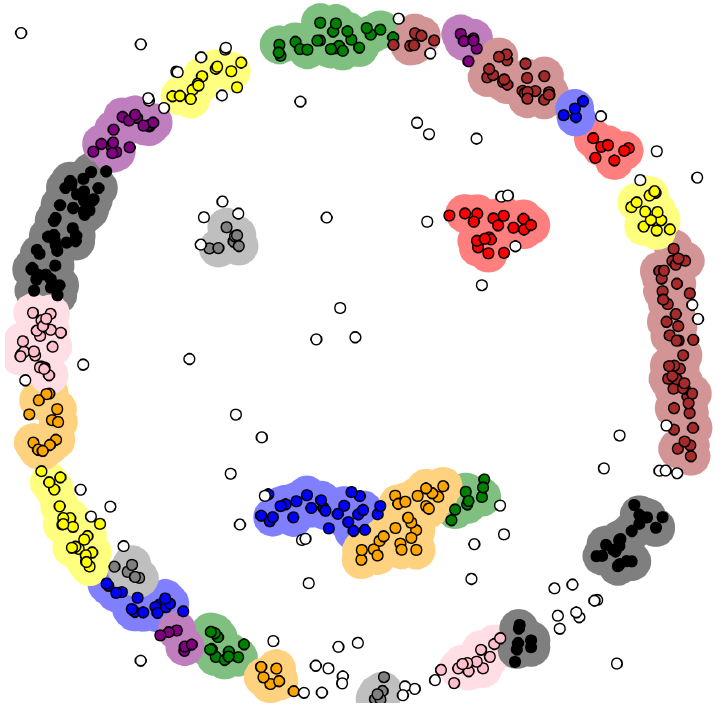

Clustering
Nå har vi ikke lenger fasit. Hvordan finner en algoritme grupper i data når ingen har fortalt den hva gruppene er? Vi ser på k-means, som definerer likhet som avstand, og DBSCAN, som definerer likhet som tetthet. Underveis ser vi hvorfor begge får problemer i høye dimensjoner.
Etter dette kapittelet skal du kunne
- forklare hva uveiledet læring er, og nevne de tre kategoriene vi ser på i faget
- gå gjennom k-means steg for steg, og si hva algoritmen minimerer (inertia)
- regne ut sannsynligheten $k!/k^k$ for god tilfeldig initialisering, og forklare hvorfor k-means++ er bedre enn «punktet lengst unna»
- regne ut og tolke inertia, silhouette og Calinski–Harabasz, og forklare hvorfor valg av $k$ er vanskelig
- nevne de implisitte antakelsene i k-means og når den feiler
- forklare DBSCAN med kjernepunkter, kantpunkter og støy, og hva som skjer når $\varepsilon$ eller min_samples er for høy eller for lav
- plassere algoritmer i de fire hovedkategoriene
- forklare konsentrasjon av avstander, og hvorfor mer data ikke løser det
11.1Uveiledet læring: læring uten fasit
I alt vi har gjort hittil har hvert datapunkt $x^{(i)}$ hatt et target $y^{(i)}$. Tapsfunksjonen målte hvor langt prediksjonen var fra fasiten, og gradient descent dyttet parametrene i riktig retning. I uveiledet læring (unsupervised learning) har vi bare $x^{(i)}$. Dataene er umerkede (unlabeled). Målet er fortsatt å lage en databasert modell, men nå skal modellen finne mønstre i dataene selv.
Hvorfor vil vi det? Fordi labels er dyre. Noen må sitte og merke hvert bilde, hver transaksjon eller hver pasientjournal. Rådata derimot har vi ofte i massevis. Uveiledet læring lar oss utnytte dem, enten for å forstå dataene eller som et forarbeid før vi gjør noe annet.
I faget ser vi på tre kategorier uveiledet læring:
- Clustering / klynging: finne grupper av like datapunkter.
- Dimensjonsreduksjon (dimensionality reduction): beskrive dataene med færre features, men beholde strukturen.
- Anomalideteksjon (outlier detection): finne punktene som ikke ligner resten.
Clustering er «klassifisering uten labels»
Clustering kan tolkes som klassifisering der ingen har fortalt oss hvilke klasser som finnes. Vi vil finne grupperinger der punktene i samme gruppe ligner hverandre og punktene i ulike grupper er ulike. Det krever to ting:
- Et likhetsmål. Hva betyr det at to punkter «ligner»? Det vanligste valget er avstand: nære punkter er like. Et annet valg er tetthet: punkter som henger sammen i et tett område hører sammen.
- Et læringssignal. Maskinlæring er optimering, og optimering trenger noe å minimere. Uten labels kan ikke tapet måle «avstand til fasit». Det må måle noe ved selve grupperingen, for eksempel hvor kompakte klyngene er.
Tenk deg at du tømmer en pose med blandet godteri på bordet og sorterer uten å vite navnene. Du må selv bestemme hva «likt» betyr (farge? form? størrelse?), og svaret blir forskjellig etter hva du velger. Det er clustering.
I faget ser vi på to algoritmer: k-means, der likhet er avstand, og DBSCAN, der likhet er tetthet.
Hvilke av disse oppgavene er uveiledet læring?
- Gruppere kunder etter kjøpsmønster uten å vite på forhånd hvilke kundetyper som finnes
- Predikere boligpris fra areal og beliggenhet, med historiske salgspriser som fasit
- Finne uvanlige servertrafikk-mønstre når ingen har merket hvilke som var angrep
- Klassifisere e-post som spam eller ikke spam fra et merket datasett
- Redusere 100 features til 2 for å kunne plotte dataene
11.2k-means steg for steg
k-means deler et datasett med $n$ punkter inn i $k$ klynger. Hver klynge representeres av en sentroide (centroid), altså klyngens midtpunkt. Hvert datapunkt tilhører klyngen med nærmest sentroide. Algoritmen ser slik ut (som i notatene):
- Velg et tall $k$, antall klynger. Det er en hyperparameter, og du velger den.
- Velg $k$ startsentroider, for eksempel tilfeldig. En sentroide er midten av en klynge, ikke nødvendigvis et datapunkt (selv om den kan falle sammen med et).
- (Notatene: tildel hvert punkt en tilfeldig klynge. Det overskrives uansett i steg 5.)
- Beregn den euklidske avstanden fra hvert datapunkt til alle sentroidene.
- Tildel (assign): hvert punkt får klyngen til nærmeste sentroide.
- Flytt (update): regn ut nye sentroider som gjennomsnittet (
np.mean) av punktene i hver klynge. - Gjenta steg 4–6 til klyngene ikke endrer seg.
Euklidsk avstand mellom to punkter $p$ og $q$ med $d$ features (notatene skriver $d_2$)
$$d_2(p,q)=\sqrt{(p_1-q_1)^2+(p_2-q_2)^2+\dots+(p_d-q_d)^2}$$Notatene skriver formelen uten rottegn. For å finne nærmeste sentroide spiller det ingen rolle, fordi kvadratroten er monoton. Kvadratet $d_2^2$ er også det som inngår i inertia.
Hva minimerer k-means?
Læringssignalet i k-means heter inertia (også kalt within-cluster sum of squares). Det er summen av kvadrerte avstander fra hvert punkt til sentroiden det er tildelt:
Inertia, der $\mu_{c(i)}$ er sentroiden til klyngen punkt $i$ er tildelt
$$\text{inertia}=\sum_{i=1}^{n}\big\lVert x^{(i)}-\mu_{c(i)}\big\rVert^2$$Hvorfor senker begge stegene inertia?
Tildel-steget: Med sentroidene holdt fast velger hvert punkt den sentroiden som gir minst kvadrert avstand. Hvert ledd i summen blir dermed mindre eller likt, så summen kan ikke øke.
Flytt-steget: Med tildelingen holdt fast ser vi på én klynge med punktene $x^{(1)},\dots,x^{(m)}$. Hvilket punkt $\mu$ minimerer $\sum_j \lVert x^{(j)}-\mu\rVert^2$? Deriver med hensyn på $\mu$ og sett lik null:
$$\frac{\partial}{\partial\mu}\sum_j\lVert x^{(j)}-\mu\rVert^2=-2\sum_j\big(x^{(j)}-\mu\big)=0\;\Rightarrow\;\mu=\frac{1}{m}\sum_j x^{(j)}$$
Gjennomsnittet er altså nøyaktig det punktet som minimerer kvadrert avstand. Derfor heter algoritmen k-means.
Konsekvens: Inertia synker eller står stille i hvert steg, og det finnes bare endelig mange måter å fordele $n$ punkter på $k$ klynger. Algoritmen må derfor stoppe. Men den kan stoppe i et lokalt minimum, og hvilket minimum den havner i avhenger av startsentroidene. Det er grunnen til at initialisering er så viktig (neste seksjon).
Eksamen 2025 del 6.1 spurte nettopp: «Hvilken størrelse forsøker k-means å minimere?» Svaret er summen av kvadrerte avstander mellom hvert punkt og den tildelte sentroiden. Silhouette og Calinski–Harabasz er evalueringsmetrikker vi regner ut etterpå, ikke det k-means optimerer.
Hvilken størrelse minimerer k-means under trening?
- Silhouette-koeffisienten, slik at klyngene blir best mulig separert
- Den gjennomsnittlige avstanden mellom sentroidene
- Summen av kvadrerte avstander fra hvert punkt til sentroiden det er tildelt
- Antall punkter som bytter klynge mellom to iterasjoner
Et punkt ligger i $p=(1,\,2)$ og en sentroide i $q=(4,\,6)$. Hva er den euklidske avstanden mellom dem?
Etter tildel-steget består en klynge av punktene $(2,\,1)$, $(4,\,3)$ og $(6,\,2)$. Hva blir $x$-koordinaten til den nye sentroiden?
Endimensjonale data: klynge A er $\{1,2,3\}$ med sentroide $2$, og klynge B er $\{8,10\}$ med sentroide $9$. Hva er inertia?
Prøv selv: k-means steg for steg
Legg merke til:
- Inertia går aldri opp når du trykker Tildel eller Flytt. Sjekk tallet.
- Bakgrunnsfargene viser hvilken sentroide som er nærmest. Grensene er rette linjer midt mellom sentroidene (et Voronoi-diagram). k-means kan derfor bare lage konvekse klynger.
- Velg «Tilfeldig» init på «Tre runde klynger» og initialiser flere ganger. Noen ganger havner to sentroider i samme klynge, og algoritmen konvergerer til en dårlig løsning med høyere inertia.
- Prøv «Måner» og «Ringer» med $k=2$. Selv med riktig $k$ klipper k-means tvers gjennom klyngene. Det kommer vi tilbake til i 11.5.
- Prøv «Avlange klynger» med $k=3$. Løsningen med lavest inertia deler ofte tvers over de tre stripene i stedet for langs dem.
Hvilke påstander om k-means stemmer?
- Inertia kan ikke øke fra én iterasjon til den neste
- Algoritmen finner alltid det globale minimumet av inertia
- En sentroide trenger ikke å være et av datapunktene
- Ulike startsentroider gir alltid samme sluttresultat
- Grensene mellom klyngene er rette (de ligger midt mellom to sentroider)
n_init, og beholder den med lavest inertia). Sentroiden er et gjennomsnitt og ligger typisk mellom datapunktene. Grensen mellom to sentroider er mengden av punkter like langt fra begge, altså midtnormalen, som er en rett linje (et hyperplan i flere dimensjoner).11.3Initialisering: hvorfor tilfeldig start går galt
Siden k-means bare finner et lokalt minimum, avgjør startsentroidene mye av resultatet. Notatene sier at sannsynligheten for å starte «på uegnede steder» øker eksponensielt med $k$. La oss regne på det.
Anta at (1) vi har valgt riktig $k$, og (2) hver sanne klynge har like mange punkter. En god start er en der hver sanne klynge får nøyaktig én sentroide. Hvis vi plukker sentroidene tilfeldig blant datapunktene, havner hver sentroide i en tilfeldig klynge med sannsynlighet $1/k$ for hver.
Sannsynligheten for at $k$ tilfeldige sentroider havner i $k$ ulike klynger (notatene lign. 103)
$$P(\text{én per klynge})=\frac{k!}{k^k}=\frac{1\cdot2\cdot3\cdots k}{k\cdot k\cdot k\cdots k}=\frac{1}{k}\cdot\frac{2}{k}\cdot\frac{3}{k}\cdots\frac{k}{k}$$To måter å forstå $k!/k^k$ på
Telling: Hver sentroide har $k$ mulige klynger, så det finnes $k^k$ like sannsynlige sekvenser. De gunstige sekvensene er de der alle $k$ sentroidene er i ulike klynger. Det er bare forskjellige rekkefølger av de $k$ klyngene, og det finnes $k!$ slike. Gunstige over mulige gir $k!/k^k$.
Én og én trekning:
- Første sentroide kan havne hvor som helst: sannsynlighet $1 = k/k$.
- Andre må unngå klyngen som er tatt: $(k-1)/k$.
- Tredje må unngå to tatte klynger: $(k-2)/k$.
- …og den siste har bare én ledig klynge: $1/k$.
Ganger vi sammen, får vi $\dfrac{k(k-1)(k-2)\cdots1}{k^k}=\dfrac{k!}{k^k}$.
Hvor fort faller det? Stirlings approksimasjon er $k!\approx\sqrt{2\pi k}\,e^{-k}k^k$. Satt inn får vi
$$\frac{k!}{k^k}\approx\frac{\sqrt{2\pi k}\,e^{-k}k^k}{k^k}=\sqrt{2\pi k}\,e^{-k}\;\propto\;\sqrt{k}\,e^{-k}$$
Faktoren $e^{-k}$ dominerer over $\sqrt{k}$, så sannsynligheten avtar eksponensielt med $k$.
Med $k=3$ like store klynger og helt tilfeldig initialisering: hva er sannsynligheten for at hver klynge får nøyaktig én sentroide? (Desimaltall, eller brøk som 6/27.)
Samme spørsmål for $k=5$. Oppgi med fire desimaler.
Den loddrette aksen er logaritmisk, så en rett linje nedover betyr eksponensielt fall. Simuleringen trekker $k$ klynger tilfeldig (med tilbakelegging) og teller hvor ofte alle er forskjellige. Den treffer formelen godt. Legg merke til: allerede ved $k=8$ er under 1 % av tilfeldige starter gode. Det er derfor vi trenger smartere initialisering.
Bedre: plasser neste sentroide lengst unna
En første forbedring er å plassere den første sentroiden tilfeldig og den neste på datapunktet som ligger lengst unna. Generelt: sentroide $j$ settes på datapunktet der avstanden til nærmeste eksisterende sentroide er størst. Da sprer sentroidene seg utover.
Problemet er at punktet lengst unna nesten alltid ligger i utkanten av en klynge, ikke i midten. Og finnes det en outlier, er det gjerne den som ligger lengst unna av alle. Da får outlieren sin egen sentroide.
Best: k-means++
k-means++ beholder ideen om å spre sentroidene, men legger inn tilfeldighet. Neste sentroide trekkes blant datapunktene med sannsynlighet proporsjonal med kvadrert avstand til nærmeste allerede valgte sentroide:
k-means++: $D(x)$ er avstanden fra $x$ til nærmeste valgte sentroide
$$P\big(x^{(i)}\text{ blir neste sentroide}\big)=\frac{D\big(x^{(i)}\big)^2}{\sum_{j}D\big(x^{(j)}\big)^2}$$Det finnes et bevis for at k-means++ i forventning gir en løsning som er høyst en faktor $O(\log k)$ dårligere (i inertia) enn den optimale. Det er en sterk garanti for en så enkel regel. k-means++ er standard i sklearn (init="k-means++").
«Lengst unna» er som å alltid velge den som sitter alene i hjørnet på festen som representant for en vennegjeng. k-means++ trekker lodd der de fjerne får flere lodd, så du ender som regel opp med noen fra midt i gjengen.
Endimensjonale data: første sentroide ligger i $0$. De andre punktene er $1$, $2$ og $4$. Med k-means++, hva er sannsynligheten for at punktet $4$ blir neste sentroide? (Med «lengst unna» ville sannsynligheten vært 1.)
Eksamen 2025 del 6.2: «Hvorfor er k-means++ å foretrekke fremfor å alltid velge punktet som ligger lengst unna?» Riktig svar: den sprer sentroidene samtidig som den beholder tilfeldighet, så sentroidene oftere havner nær sentrum av de ekte klyngene i stedet for ute ved kantene.
I k-means++ trekkes neste sentroide med sannsynlighet proporsjonal med kvadrert avstand til nærmeste eksisterende sentroide. Hva er hovedgrunnen til at dette er bedre enn å alltid velge punktet lengst unna?
- Det gir nøyaktig lik avstand mellom alle sentroidene
- Sentroidene spres utover, men tilfeldigheten gjør at de oftere havner nær midten av klyngene enn i utkanten eller på outliers
- Det foretrekker punkter som ligger nær sentroidene som allerede er valgt
- Det gjør at k-means alltid finner det globale minimumet
Hvordan oppfører sannsynligheten for at tilfeldig initialisering gir én sentroide i hver av $k$ like store klynger seg når $k$ vokser?
- Den avtar som $1/k$
- Den er konstant $1/2$, fordi hver sentroide enten treffer eller bommer
- Den avtar polynomisk, som $1/k^2$
- Den avtar eksponensielt, omtrent som $\sqrt{k}\,e^{-k}$
I praksis: sklearn og MiniBatchKMeans
Notatene anbefaler MiniBatchKMeans, særlig for store datasett. I stedet for å bruke hele datasettet i hver iterasjon bruker den et lite tilfeldig utvalg (en mini-batch), akkurat som mini-batch SGD i kapittel 10. Det går mye raskere og gir nesten like gode klynger.
Notatene skriver «keras.cluster.MiniBatchKmeans». Det riktige er sklearn.cluster.MiniBatchKMeans fra scikit-learn (Keras har ingen clustering-modul). Notatene sier også at algoritmen prøver å velge $k$ selv hvis du ikke oppgir det. I sklearn er standardverdien n_clusters=8, så du må velge $k$ med omhu.
from sklearn.cluster import KMeans, MiniBatchKMeans
km = KMeans(n_clusters=4, init="k-means++", n_init=10, random_state=0)
labels = km.fit_predict(X) # klyngenummer per rad
km.cluster_centers_ # sentroidene, form (k, d)
km.inertia_ # summen av kvadrerte avstander
mbk = MiniBatchKMeans(n_clusters=4, batch_size=1024) # for store n
mbk.fit(X)Hva er forskjellen på MiniBatchKMeans og vanlig KMeans?
- MiniBatchKMeans oppdaterer sentroidene med et lite tilfeldig utvalg av punkter per iterasjon i stedet for hele datasettet
- MiniBatchKMeans velger antall klynger automatisk
- MiniBatchKMeans bruker tetthet i stedet for avstand som likhetsmål
- MiniBatchKMeans er en del av Keras og kan derfor kjøre på GPU
n_clusters). Likhetsmålet er fortsatt euklidsk avstand, og klassen ligger i sklearn.cluster, ikke i Keras (notatene har en trykkfeil der).11.4Hvor mange klynger? Metrikker for å velge $k$
$k$ er en hyperparameter, og i uveiledet læring har vi ingen valideringsfasit å sjekke mot. Valg av $k$ er derfor blant de store utfordringene i clustering. Det vi kan gjøre, er å tilpasse flere modeller med ulike $k$ og regne ut klyngemetrikker som måler hvor «god» grupperingen ser ut. sklearn.metrics.cluster har mange. Du bør kjenne til tre.
1. Inertia (lav er bra, men…)
Inertia er summen av kvadrerte avstander til sentroiden. Lav verdi betyr kompakte klynger. Men svakheten er stor: den enkleste måten å få lav inertia på er å øke $k$. Med $k=n$ får hvert punkt sin egen sentroide, og inertia blir $0$. Inertia synker (nesten) alltid når $k$ øker, så minimum av inertia sier ingenting om riktig $k$.
Albuemetoden (elbow method) er måten vi likevel bruker inertia på: plott inertia mot $k$ og se etter «albuen», der kurven går fra bratt til flat. Før albuen gir en ekstra klynge stor gevinst fordi vi deler en ekte klynge i to. Etter albuen gir det lite. Albuen er ofte uskarp, så metoden krever skjønn.
2. Silhouette-koeffisienten (nær 1 er bra)
Silhouette måler for hvert punkt hvor godt det passer i sin egen klynge sammenlignet med nærmeste andre klynge:
Silhouette for ett punkt. $a$ = midlere avstand til de andre punktene i egen klynge (mean intra-cluster distance), $b$ = midlere avstand til punktene i nærmeste andre klynge (mean nearest-cluster distance)
$$s=\frac{b-a}{\max(a,\,b)}\in[-1,\,1]$$Silhouette for hele clusteringen er gjennomsnittet av $s$ over alle punkter. Tolkningen:
| Verdi | Betyr | Hvorfor |
|---|---|---|
| $s\approx1$ | Punktet ligger godt i sin klynge (best) | $a\ll b$: tett på egne, langt fra andre |
| $s\approx0$ | Punktet ligger på grensen, eller klyngene overlapper | $a\approx b$ |
| $s\approx-1$ | Punktet er i feil klynge (verst) | $a\gg b$: nærmere en annen klynge enn sin egen |
For å gjøre tallet skalafritt og begrenset til $[-1,1]$. Hvis $b>a$, blir $s=1-a/b$, som går mot 1 når $a$ blir liten. Hvis $a>b$, blir $s=b/a-1$, som går mot $-1$. Uten nevneren ville tallet avhenge av hvilke enheter featurene er målt i. I motsetning til inertia straffer silhouette også å dele en ekte klynge i to, fordi $b$ da blir liten (den «andre» klyngen er rett ved siden av).
Endimensjonale data. Klynge A er $\{1,\,2,\,4\}$ og klynge B er $\{8,\,9\}$. Hva er silhouette-verdien til punktet $4$? Oppgi med tre desimaler.
$b$ = midlere avstand til B (eneste andre klynge): $\frac{|4-8|+|4-9|}{2}=\frac{4+5}{2}=4.5$.
$s=\frac{4.5-2.5}{\max(2.5,\,4.5)}=\frac{2}{4.5}\approx0.444$. Positivt, så punktet ligger riktig, men nærmere grensen enn punktene 1 og 2.
Et punkt har midlere avstand $a=4$ til sin egen klynge og $b=3$ til nærmeste andre klynge. Hva er silhouette-verdien?
Klikk på et punkt for å velge det, og dra det rundt. Klyngetilhørigheten (fargen) er låst, så du kan se hva som skjer med et punkt som er tildelt «feil». Heltrukne linjer går til egne klyngemedlemmer (gjennomsnittet er $a$), stiplede til den andre klyngen (gjennomsnittet er $b$). Legg merke til: dra et blått punkt over til den oransje klyngen, så blir $s$ negativ. Legg det midt mellom klyngene, så blir $s\approx0$. Flytt flere oransje punkter inn mot de blå, så synker snittet for alle punktene, fordi $b$ blir mindre for begge klyngene.
3. Calinski–Harabasz (høy er bra)
Calinski–Harabasz-scoren er et forhold mellom spredning mellom klyngene (vil vi ha stor) og spredning innad i klyngene (vil vi ha liten). Den måler hvor langt det er mellom klyngene, normalisert med hvor store klyngene er. Høy verdi betyr tette klynger med god separasjon.
Formelen (greit å ha sett)
Med $n$ punkter, $k$ klynger, $n_j$ punkter i klynge $j$, sentroider $\mu_j$ og totalt gjennomsnitt $\mu$:
$$\text{CH}=\frac{B/(k-1)}{W/(n-k)},\qquad B=\sum_{j=1}^{k}n_j\lVert\mu_j-\mu\rVert^2,\qquad W=\sum_{i}\lVert x^{(i)}-\mu_{c(i)}\rVert^2$$
$W$ er akkurat inertia. Faktorene $k-1$ og $n-k$ korrigerer for at $B$ vokser og $W$ krymper bare fordi vi øker $k$. Uten dem ville CH, som inertia, alltid foretrekke flere klynger.
| Metrikk | Bra verdi | Måler | Fallgruve |
|---|---|---|---|
| Inertia | Lav | Kompakthet innad | Går mot 0 når $k\to n$. Bruk albuen, ikke minimum |
| Silhouette | Nær 1 (område $[-1,1]$) | Egen klynge vs nærmeste andre, per punkt | $O(n^2)$ å regne ut. Favoriserer runde, godt separerte klynger |
| Calinski–Harabasz | Høy (ingen øvre grense) | Mellom-spredning / innad-spredning | Favoriserer også konvekse, runde klynger |
Hver kurve er regnet ut med k-means++ (beste av fem starter) for hver $k$. Den markerte ringen viser hvilken $k$ hver metrikk foreslår (albuen er her funnet automatisk som den $k$ der fallet i inertia inn til $k$ er størst sammenlignet med fallet videre til $k+1$, en enkel tommelfingerregel). Legg merke til: på «Fire tydelige klynger» er alle enige. På de andre datasettene peker de ofte på ulike $k$, og på data uten struktur foreslår de likevel en $k$. Metrikkene finner alltid noe, enten det finnes klynger eller ikke.
Eksamen 2025 del 6.3: «Hvorfor er det vanskelig å velge antall klynger $k$ i k-means?» Riktig svar: ulike metrikker kan foreslå ulike verdier for $k$. Feilsvarene var at det finnes én metrikk som alltid gir optimal $k$, at k-means velger $k$ selv, og at $k$ alltid er lik antall klasser.
Du kjører k-means for $k=2,\dots,10$. Albuen i inertia-plottet ser ut til å ligge ved $k=4$, mens silhouette er høyest ved $k=3$. Hva er den beste konklusjonen?
- Metrikkene måler ulike ting og kan være uenige. Se på dataene (f.eks. i 2D etter dimensjonsreduksjon), klyngestørrelser og domenekunnskap før du bestemmer deg
- Velg $k=10$, fordi inertia er lavest der
- Silhouette er alltid riktig, så $k=3$ er fasit
- Det er en feil i koden, fordi metrikkene alltid skal gi samme $k$
Hvorfor kan vi ikke bare velge den $k$ som gir lavest inertia?
- Fordi inertia bare kan regnes ut for $k\le3$
- Fordi inertia synker når $k$ øker, og blir 0 når hvert punkt har sin egen sentroide ($k=n$)
- Fordi lav inertia betyr at klyngene overlapper
- Fordi inertia er tilfeldig og varierer mye fra kjøring til kjøring
Et datapunkt har silhouette-verdi $-0.7$. Hva forteller det?
- Punktet ligger svært godt plassert midt i sin klynge
- Punktet ligger nøyaktig på grensen mellom to klynger
- Punktet er en outlier som DBSCAN ville merket med $-1$
- Punktet ligger i snitt mye nærmere en annen klynge enn sin egen, og er sannsynligvis tildelt feil klynge
Hva betyr en høy Calinski–Harabasz-score?
- Klyngene er tette og godt separert fra hverandre
- Klyngene er store og spredte
- Mange punkter har negativ silhouette
- Det er valgt for mange klynger
11.5Hva k-means antar, og når den feiler
I forelesningen ble det vist eksempler der k-means ikke finner klyngene selv med riktig $k$. Det skjer typisk når avstanden innad i en klynge er større enn avstanden mellom naboklynger. Det er en direkte konsekvens av at k-means bruker avstand til en sentroide som likhetsmål.
Alle læringsalgoritmer har implisitte antakelser om problemet de skal løse (jf. induktiv bias i kapittel 1). Når dataene bryter antakelsene, feiler algoritmen, uansett hvor mye vi tuner den.
Oppgave fra notatene: Hvilken implisitt antakelse ligger i k-means? Tenk på hvordan et punkt tildeles en klynge, og hvordan grensene mellom klyngene ser ut.
Hovedantakelsen er at avstanden mellom punkter i samme klynge er mindre enn avstanden til punkter i andre klynger, altså at klyngene er kompakte «klumper» rundt et sentrum. Det gir flere mer konkrete antakelser:
- Konvekse klynger: hver klynge er en Voronoi-celle med rette grenser, så måner, ringer og spiraler kan ikke fanges.
- Sfæriske (runde) klynger: euklidsk avstand behandler alle retninger likt, så avlange klynger blir kuttet på tvers.
- Omtrent like store klynger (både i utstrekning og antall punkter): grensen ligger midt mellom sentroidene, så en stor klynge «gir bort» punkter til en liten nabo.
- At $k$ er kjent, og at alle punkter hører til en klynge (ingen støy).
Eksamen 2024 oppg. 29: «Når bør vi bruke k-means?» Riktig: når avstanden innad i klyngen er mindre enn avstandene mellom klyngene. Distraktorene var «når vi ikke har en god hypotese om antall klynger» (da passer DBSCAN bedre), «når features har ulike størrelsesordener» (da må vi skalere først) og «når klyngene ikke er lineært separerbare» (k-means lager nettopp lineære grenser).
I hvilken situasjon passer k-means best?
- Når klyngene har form som to halvmåner som griper inn i hverandre
- Når klyngene er kompakte og omtrent runde, slik at punkter i samme klynge er nærmere hverandre enn punkter i andre klynger
- Når vi ikke aner hvor mange klynger det finnes, og dataene inneholder mye støy
- Når klyngene har svært ulik størrelse og tetthet
Fordeler og ulemper
- Lett å forstå og implementere
- Rask, og fungerer godt på store datasett (stor $n$), særlig med MiniBatchKMeans
- Parametrisk: sentroidene kan brukes til å tildele nye punkter (
predict)
- Følsom for valg av $k$. Automatisk valg fungerer ofte dårlig, og manuelt valg er bare så godt som metoden
- Svak med outliers: de trekker sentroidene (gjennomsnittet) bort fra klyngene
- Dårlig i høye dimensjoner: euklidsk avstand konvergerer mot en konstant for stor $d$ (11.8)
- Antar konvekse, runde, like store klynger
- Avhenger av skalering av features
Hvis én feature er inntekt i kroner (0–1 000 000) og en annen er alder i år (0–100), dominerer inntekten den euklidske avstanden fullstendig, og k-means klynger i praksis bare på inntekt. Standardiser (StandardScaler) før k-means og DBSCAN. Det gjelder alle avstandsbaserte metoder, også kNN.
Sentroiden er et gjennomsnitt, og gjennomsnitt er følsomt for ekstremverdier (som MSE i kapittel 6). Én outlier langt unna kan dra en sentroide bort fra klyngens midte, eller med «lengst unna»-init få en hel sentroide for seg selv. Prøv datasettet «Klynger + én outlier» i widgeten over med init «Lengst unna».
Hvilke er reelle svakheter ved k-means?
- Outliers kan trekke sentroidene bort fra de faktiske klyngene
- Fungerer dårlig i høydimensjonale rom fordi euklidske avstander blir nesten like
- Fungerer ikke på store datasett
- Resultatet avhenger av hvordan featurene er skalert
- Kan ikke brukes til å tildele nye datapunkter etter trening
km.predict), så den kan absolutt brukes på nye data. Det er DBSCAN som mangler den muligheten.11.6DBSCAN: klynger som tette områder
DBSCAN (Density-Based Spatial Clustering of Applications with Noise) ble utviklet av Martin Ester, Hans-Peter Kriegel, Jörg Sander og Xiaowei Xu i 1996. I stedet for «nær en sentroide» bruker den tetthet som likhetsmål: en klynge er et sammenhengende område der punktene ligger tett. Punkter i tynne områder hører ikke til noen klynge.
To hyperparametre og tre typer punkter
- $\boldsymbol{\varepsilon}$ (
eps): maksimal avstand mellom to punkter for at de skal regnes som naboer. - min_samples: minimum antall naboer innenfor $\varepsilon$ for at et punkt skal være et kjernepunkt.
Med disse deles punktene i tre typer:
- Kjernepunkter (core points): har minst min_samples naboer innenfor $\varepsilon$. De ligger «inne i» en klynge og utvider den.
- Ikke-kjernepunkter / kantpunkter (border points): har for få naboer til å være kjernepunkt, men ligger innenfor $\varepsilon$ av et kjernepunkt. De hører til klyngen, men utvider den ikke.
- Outliers / støy (noise): er verken kjernepunkt eller innenfor $\varepsilon$ av et kjernepunkt. De får label $-1$ og blir ikke puttet i noen klynge.
Prosedyren
- Finn kjernepunktene: tell antall naboer innenfor $\varepsilon$ for hvert punkt. Er det nok (min_samples), er punktet et kjernepunkt.
- Spre klyngene: start i et kjernepunkt og legg til alle naboene. Er en nabo selv et kjernepunkt, fortsetter klyngen å vokse fra den. Er den ikke det, blir den et kantpunkt og spredningen stopper der.
- Resten er støy: punkter som ikke ble nådd fra noe kjernepunkt, er outliers.
Vi vet altså om et punkt er et kjernepunkt allerede i steg 1, bare ut fra hyperparametrene. Forskjellen på kantpunkter og støy vet vi først etter steg 2.
Notatene skriver at et punkt er kjernepunkt hvis antall naboer er «større enn min_samples». I sklearn teller punktet seg selv med, og kravet er minst min_samples punkter innenfor $\varepsilon$. Ulike kilder bruker litt ulike konvensjoner. Ideen er den samme, men pass på hvordan oppgaven er formulert hvis du skal telle.
Når er to punkter i samme klynge?
Det er her DBSCAN skiller seg fra k-means. To punkter er i samme klynge hvis du kan gå fra det ene til det andre gjennom en kjede av punkter der hvert steg er høyst $\varepsilon$ (og kjeden går gjennom kjernepunkter). De to punktene kan ligge langt fra hverandre i luftlinje. Derfor kan DBSCAN finne klynger med vilkårlig form, som måner, ringer og smilefjes.
DBSCAN er som en hviskelek i et folksomt rom: en beskjed sprer seg bare fra person til person som står innenfor en armlengde ($\varepsilon$). Alle som nås av beskjeden, er én klynge. Kjernepunktene er de som står midt i mengden og sender beskjeden videre. Kantpunktene hører den, men står så alene at de ikke når noen nye. Støyen står for langt unna til å høre noe.
Eksamen 2025 del 6.4: «Ifølge DBSCAN tilhører to punkter samme klynge dersom…» Riktig: det ene kan nås fra det andre gjennom en kjede av punkter der hvert skritt har lengde som ikke overstiger $\varepsilon$. Distraktorene blandet inn k-means-begreper (sentroider og Voronoi-regioner).
Ifølge DBSCAN, når tilhører to punkter samme klynge?
- Når de har samme nærmeste sentroide
- Når avstanden mellom dem er mindre enn $\varepsilon$
- Når begge har minst min_samples naboer
- Når det ene kan nås fra det andre gjennom en kjede av (kjerne)punkter der hvert steg er høyst $\varepsilon$
Endimensjonale data: $\{1,\,2,\,3,\,7,\,8,\,15\}$. Bruk $\varepsilon=1.5$ og min_samples $=3$ (punktet selv telles med, som i sklearn). Hvor mange punkter blir støy?
Bare punktet $2$ har minst 3 og er kjernepunkt. Punktene $1$ og $3$ ligger innenfor $\varepsilon$ av $2$ og blir kantpunkter i samme klynge.
$7$ og $8$ er naboer, men ingen av dem er kjernepunkt, og ingen kjernepunkt er nær, så de blir støy. Det blir også $15$. Svar: 3 støypunkter ($7$, $8$, $15$) og én klynge $\{1,2,3\}$. Med min_samples $=2$ ville $\{7,8\}$ blitt en egen klynge.
Startinnstillingen ($\varepsilon=0.3$) ligner figuren fra eksamen 2024. Legg merke til:
- For lav $\varepsilon$: få punkter har nok naboer, så smilefjeset brytes opp i mange småklynger og mye blir støy. Dra $\varepsilon$ opp mot ca. 0.6–0.8, så blir ansikt, øyne og munn hver sin klynge.
- For høy $\varepsilon$: klyngene smelter sammen. Ved $\varepsilon\approx1.5$ blir øyne, munn og ansikt én stor klynge.
- For høy min_samples: nesten ingen punkter blir kjernepunkter, så mye blir støy (ligner for lav $\varepsilon$). For lav min_samples (f.eks. 1–2): hvert lille par av støypunkter blir sin egen «klynge».
- På «Ulik tetthet» finnes det ingen $\varepsilon$ som passer begge klyngene: liten $\varepsilon$ gjør den spredte klyngen til støy, stor $\varepsilon$ sluker støyen inn i klyngene. Det er ulempen med globale parametre.

Figur 11.6 er resultatet av en DBSCAN-modell med ett dårlig parametervalg. Hvilket?
- For høy verdi av $\varepsilon$
- For lav verdi av min_samples
- For lav verdi av $\varepsilon$
- For høy verdi av min_samples, i kombinasjon med for høy $\varepsilon$
Eksamen 2024 oppg. 30 (smilefjeset). Lær deg mønstrene: mange små klynger + mye støy → $\varepsilon$ for lav (eller min_samples for høy). Få store klynger som slår sammen ulike strukturer + nesten ingen støy → $\varepsilon$ for høy. Mange bitte små klynger av 2–3 punkter i det som burde vært støy → min_samples for lav.
Hva skjer typisk hvis $\varepsilon$ settes alt for høyt i DBSCAN?
- Nesten alle punkter blir støy
- Separate klynger smelter sammen til én eller noen få store klynger, og nesten ingen punkter blir støy
- Algoritmen krever at vi oppgir antall klynger
- Hvert punkt blir sin egen klynge
Fordeler og ulemper
- Trenger ikke antall klynger, og gjør ingen antakelse om det
- Identifiserer outliers og putter dem ikke i klynger, og er derfor robust mot outliers
- Finner klynger med vilkårlig form (ikke-konvekse)
- Følsom for valg av $\varepsilon$ og min_samples
- Parametrene er globale: klynger med ulik tetthet kan ikke håndteres med én $\varepsilon$
- Treg for store datasett: må finne avstander mellom (i verste fall) alle par av punkter, $O(n^2)$
- Svak i høye dimensjoner: bygger på avstand, som mister mening der (11.8)
- Ikke-parametrisk: kan ikke tildele nye punkter uten å kjøre på nytt
Eksamen 2024 oppg. 27: «Hvilken egenskap gjør DBSCAN særlig robust?» Riktig: den identifiserer outliers og prøver ikke å putte disse i klynger. «Hyperparameteren for antall klynger er valgfri» var en felle: DBSCAN har ingen slik hyperparameter i det hele tatt. «Kan bruke ulike hyperparametre i ulike klynger» er feil, siden parametrene er globale.
Hvilken egenskap gjør DBSCAN særlig robust sammenlignet med k-means?
- Den bruker ulike verdier av $\varepsilon$ i ulike deler av rommet
- Om et punkt er kjernepunkt, avhenger ikke av $\varepsilon$
- Den merker outliers som støy i stedet for å tvinge dem inn i en klynge
- Den har en valgfri hyperparameter for antall klynger
Hvilke er ulemper med DBSCAN?
- Den sliter når klyngene har svært ulik tetthet
- Den kan bare finne konvekse (runde) klynger
- Den blir treg for svært store datasett
- Den fungerer dårligere i høydimensjonale data
- Den må vite antall klynger på forhånd
Du har GPS-posisjoner for alle taxiturer som startet i Trondheim en lørdag. Du vil finne «populære hentesteder». Mange turer starter tilfeldige steder. Ville du brukt k-means eller DBSCAN? Begrunn med antakelsene.
11.7Fire hovedkategorier av clustering
Clustering-algoritmer deles gjerne inn i fire hovedkategorier:
- Sentroidebasert: starter med sentroider, knytter punkter til dem og justerer frem til konvergens. k-means.
- Tetthetsbasert: klynger er områder med høy tetthet av punkter. Isolerte punkter er outliers. DBSCAN.
- Fordelingsbasert: antar at hver klynge består av punkter trukket fra en sannsynlighetsfordeling, vanligvis en gaussisk, og finner parametrene til fordelingene.
- Hierarkibasert: lager et hierarki av klynger. I starten er hvert punkt sin egen klynge, og på slutten er alle i samme klynge. Man velger klyngene fra ett nivå i hierarkiet (der den stiplede linjen kutter dendrogrammet).
Eksamen 2024 oppg. 22 spurte hvilken kategori k-means og DBSCAN tilhører: k-means er sentroidebasert, DBSCAN er tetthetsbasert. Notatene sier at de to andre kategoriene ikke er pensum, i den forstand at du bør ha hørt om dem, men ikke trenger å kunne algoritmer derfra.
Hvilken kombinasjon er riktig?
- k-means er fordelingsbasert, DBSCAN er hierarkibasert
- k-means er tetthetsbasert, DBSCAN er sentroidebasert
- Begge er sentroidebaserte, men DBSCAN har i tillegg en støyklasse
- k-means er sentroidebasert, DBSCAN er tetthetsbasert
11.8Dimensjonsforbannelsen igjen: når alle avstander blir like
Både k-means og DBSCAN står og faller på at avstand betyr noe: punkter i samme klynge skal være nærmere hverandre enn punkter i ulike klynger. I kapittel 4 så vi at høydimensjonale rom stort sett er tomme. Nå ser vi en annen side av samme forbannelse.
Notatene gjør et enkelt eksperiment: trekk to tilfeldige punkter uniformt i enhetskuben $[0,1]^d$, regn ut den euklidske avstanden mellom dem, og gjenta 1000 ganger. Gjør det for $d=2,3,10,100,1000,10000$.
def get_cube_dist(dim):
dims = range(dim)
P1 = np.array([np.random.uniform() for _ in dims])
P2 = np.array([np.random.uniform() for _ in dims])
dist = np.linalg.norm(P1-P2)
return dist
n_iter = 1000
dims = [2, 3, 10, 100, 1000, 10000]
for dim in dims: # (forenklet fra notatene)
dists = [get_cube_dist(dim) for _ in range(n_iter)]
plt.hist(dists, label=f"d={dim}")
Oppgave fra notatene: Hva forteller fordelingene i figur 11.8 oss om hvordan avstand oppfører seg i høydimensjonale rom? Se på både hvor fordelingen ligger og hvor bred den er, sammenlignet med avstanden fra 0.
Middelavstanden vokser med $d$ (omtrent som $\sqrt{d/6}$: 0.5 ved $d=2$, ca. 4 ved $d=100$, ca. 41 ved $d=10000$). Men bredden (standardavviket) er nesten konstant, rundt 0.24. Relativt til middelverdien blir fordelingen derfor ekstremt smal: ved $d=10000$ ligger nesten alle avstandene mellom ca. 40 og 41.5.
Det er konsentrasjon av avstander (concentration of distances): alle punkter er omtrent like langt fra alle andre. «Nærmeste» og «fjerneste» nabo er nesten like langt unna, så begrepet «nær» mister mening. Clustering-algoritmer som bygger på at punkter i samme klynge er nærmere hverandre enn punkter i andre klynger, klarer da ikke å skille klyngene.
Widgeten trekker 1000 punktpar for hver $d$, akkurat som i notatene. Legg merke til: med absolutt skala (som i figuren) flytter fordelingen seg mot høyre og ser ut til å bli en tynn strek. Slå på relativ skala: ved $d=2$ er den største avstanden mange ganger den minste, mens ved $d=10000$ er forholdet maks/min bare rundt 1.05. Da finnes det ingen «nære» punkter å bygge klynger av.
For to uniformt tilfeldige punkter i $[0,1]^d$ er den forventede kvadrerte avstanden $d/6$, så typisk avstand er omtrent $\sqrt{d/6}$. Omtrent hvor stor er typisk avstand når $d=600$?
Fordypning: hvorfor $\sqrt{d/6}$ og konstant spredning? ikke nødvendig til eksamen
Kvadrert avstand er en sum av $d$ uavhengige ledd $(U_j-V_j)^2$ med $U_j,V_j\sim\text{Uniform}(0,1)$. Hvert ledd har forventning $1/6$ og varians $7/180$. Summen har derfor forventning $d/6$ og standardavvik $\sqrt{7d/180}$, altså begge vokser lineært med $d$ og $\sqrt d$. Etter rottegnet blir avstanden omtrent $\sqrt{d/6}$ med standardavvik $\approx\sqrt{7/120}\approx0.24$, uavhengig av $d$. Relativ spredning er dermed $\propto1/\sqrt d\to0$.
Det er fristende å tro at problemet forsvinner med flere datapunkter. Det gjør det ikke. Konsentrasjonen er en egenskap ved hvordan avstander oppfører seg i høydimensjonale rom, ikke ved størrelsen på datasettet. Trekker du 10 ganger så mange punktpar i widgeten, får du det samme smale histogrammet. Løsningen er å redusere antall dimensjoner, og behold bare retningene som bærer strukturen i dataene.
Hva er hovedpoenget med figur 11.8 (figur 22 i notatene)?
- Avstandene blir mindre når $d$ øker, så alle punkter havner nær hverandre
- Avstandene blir store, men spredningen blir liten relativt til middelverdien, slik at alle punkter er omtrent like langt fra hverandre
- Fordelingen av avstander blir uniform i høye dimensjoner
- Avstander kan ikke regnes ut når $d$ er større enn antall datapunkter
Du har 2000 features og k-means gir meningsløse klynger. En kollega foreslår å samle inn ti ganger så mye data. Hva er den beste responsen?
- Godt forslag, flere punkter fyller rommet og gjør avstandene meningsfulle
- Bytt til DBSCAN, som ikke påvirkes av antall dimensjoner
- Øk $k$ til antall datapunkter, så forsvinner problemet
- Mer data løser ikke konsentrasjon av avstander. Reduser heller dimensjonaliteten først (f.eks. PCA), og cluster i det lavdimensjonale rommet
11.9Prosjekt 3: KMeans mot DBSCAN i praksis
Problem 2 i prosjekt 3 ga et datasett med 4000 rader og 16 384 features (128 × 128 stokkede piksler), og spurte bl.a.: «❓ Which clustering algorithm and hyperparameters did you use? Compare KMeans and DBSCAN.» og «❓ Which dimensionality reduction methods helped you choose k?»
Dataene viste seg å være kartutsnitt av fire steder i Trondheim (IKEA Leangen, Studentersamfundet, Trondheim Spektrum og Pirbadet), rotert og zoomet tilfeldig. Gangen i løsningen illustrerer nesten hele dette kapittelet:
- Ikke cluster direkte på 16 384 dimensjoner. Avstander konsentreres, og i tillegg dominerer rotasjon og zoom over hvilket sted bildet viser. Først ble det laget rotasjonsinvariante features, så PCA ned til 50 komponenter (kapittel 12).
- Velge $k$: silhouette for KMeans på 20 komponenter var 0.375 ved $k=4$ og 0.379 ved $k=5$, altså nesten likt. Men $k=5$ skilte bare ut en gruppe på 223 punkter fra én klynge, mens $k=4$ ga fire klynger på ca. 1000 hver. t-SNE viste fire tydelige grupper. Metrikk + visualisering + klyngestørrelser ga sammen $k=4$.
- KMeans ($k=4$) kuttet over de avlange, buede klyngene (hvert sted under varierende rotasjon blir en buet «manifold», ikke en rund klump) og fikk bare 97.8 % samsvar, under kravet på 99 %. Antakelsen om runde klynger var brutt.
- DBSCAN på 20 komponenter ga 15–97 klynger og hundrevis av støypunkter, avhengig av $\varepsilon$. På bare 5 komponenter med
eps=10, min_samples=5fant den nøyaktig 4 klynger uten støy og 99.95 % samsvar. Men det krevde et sveip over parametrene.
Hvorfor var DBSCAN så vanskelig å få til i 20 dimensjoner, men fungerte i 5? Bruk begrepene fra dette kapittelet.
I 20 dimensjoner er avstandene mer konsentrerte: forskjellen mellom «nær nabo» og «langt unna» er liten relativt til avstandene selv. En fast $\varepsilon$ treffer da dårlig. Litt for liten, og nesten ingen punkter har nok naboer (mye støy, mange småklynger). Litt for stor, og alt henger sammen. Vinduet med gode verdier blir smalt eller forsvinner. I tillegg har klyngene ulik tetthet, og DBSCAN har bare én global $\varepsilon$ og min_samples. Tettheten (punkter per volum) faller også raskt med $d$, så samme antall punkter blir «tynnere» i 20D enn i 5D.
I 5 dimensjoner (de fem første PCA-komponentene, som bærer mest av strukturen) er avstandene mer informative, og en $\varepsilon$ som skiller klyngene finnes. Lærdom: reduser dimensjonen før tetthets- og avstandsbasert clustering.
Sammenlign læringssignalet i k-means med tapet i logistisk regresjon. Hva er likt, og hva mangler i k-means?
Oppsummering
- Uveiledet læring finner mønstre i data uten targets: clustering, dimensjonsreduksjon og anomalideteksjon. Clustering er «klassifisering uten labels» og trenger et likhetsmål og et læringssignal.
- k-means: velg $k$, initialiser sentroider, gjenta tildel (nærmeste sentroide, euklidsk avstand) og flytt (gjennomsnitt) til ingenting endres. Minimerer inertia = summen av kvadrerte avstander til tildelt sentroide. Konvergerer til et lokalt minimum.
- Initialisering: tilfeldig start gir én sentroide per klynge med sannsynlighet $k!/k^k\approx\sqrt{2\pi k}\,e^{-k}$ (k=3: 0.22, k=5: 0.038). «Lengst unna» havner i utkanten eller på outliers. k-means++ trekker med $P\propto D^2$: spredning pluss tilfeldighet, og i forventning høyst $O(\log k)$ fra optimum.
- Valg av $k$ er vanskelig, og ulike metrikker kan foreslå ulike $k$. Inertia (lav, men 0 ved $k=n$, så bruk albuen), silhouette $s=(b-a)/\max(a,b)$ (1 bra, 0 grense, −1 feil klynge) og Calinski–Harabasz (høy = tette, godt separerte klynger).
- k-means antar at avstand innad < avstand mellom klynger: konvekse, runde, like store klynger. Svak mot outliers og høye dimensjoner, og krever skalering. Rask og enkel.
- DBSCAN (tetthetsbasert): kjernepunkter (≥ min_samples innen $\varepsilon$), kantpunkter og støy (label −1). Samme klynge = kjede av $\varepsilon$-steg. Trenger ikke $k$, er robust mot outliers og finner vilkårlige former. Men globale parametre (ulik tetthet), treg for stor $n$, svak i høye dimensjoner.
- For lav $\varepsilon$ → mange småklynger og mye støy (smilefjeset 2024). For høy $\varepsilon$ → klynger smelter sammen.
- Kategorier: sentroide- (k-means), tetthets- (DBSCAN), fordelings- og hierarkibasert.
- Konsentrasjon av avstander: i høye $d$ er alle punkter omtrent like langt fra hverandre. Clustering feiler, og mer data hjelper ikke. Reduser dimensjonen først (kapittel 12).